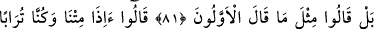

NE DE AZ
ŞÜKREDİYORSUNUZ?!
78. O, sizin için kulakları, gözleri ve gönülleri yaratandır. Ne de az
şükrediyorsunuz!
79. Ve O, sizi yeryüzünde yaratıp türetendir. Sırf O’nun huzurunda
toplanacaksınız.
80. Ve O, yaşatan ve öldürendir; gecenin ve gündüzün değişmesi O’nun eseridir.
Hâla aklınızı kullanmaz mısınız!
81. Buna rağmen onlar, öncekilerin dedikleri gibi dediler.
82. Dediler ki: Sahi biz, ölüp de bir toprak ve kemik yığını haline gelmişken,
mutlaka yeniden diriltileceğiz öyle mi?
83. Hakikaten, gerek bize, gerekse daha önce atalarımıza böyle bir vaadde
bulunuldu; (fakat) bu geçmiştekilerin masallarından başka bir şey değildir!
“O, sizin” istifâdeniz “için kulakları, gözleri ve gönülleri yaratandır.”
“
” kendisiyle seslerin idrâk edildiği kulakta bulunan kuvvettir. İşitme fiili için de
“
” kelimesi kullanılır. Bazen kulak da bu kelime ile ifâde edilir. “
”, “
”
kelimesinin çoğuludur. Bakma görevi yapan organa ve onda bulunan kuvvete bu isim
verilir. “
”, “
” kelimesinin çoğuludur.
Râğıb, der ki: “
” kelimesi kalb kelimesine benzer. Fakat kalbde yanma mânâsı
dikkate alındığında “
” denir. “
” Eti kızarttım, demektir. “
” kızartılmış
et, demektir.
Âyette bu üç uzuv özellikle zikredilmiştir. Çünkü, dînî ve dünyevî faydaların çoğu
bunlara bağlıdır.
“Ne de az şükrediyorsunuz!” Bu büyük nimetlere pek az şükrediyorsunuz. Halbuki